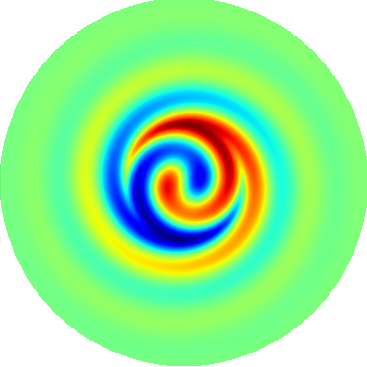
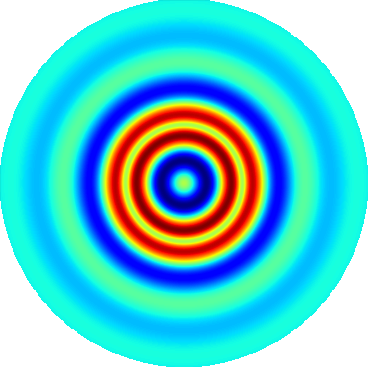
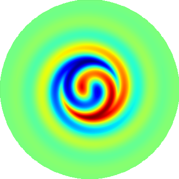
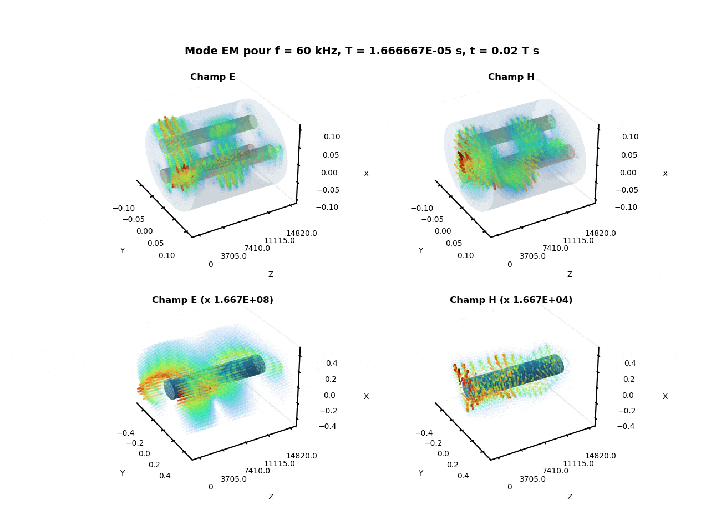
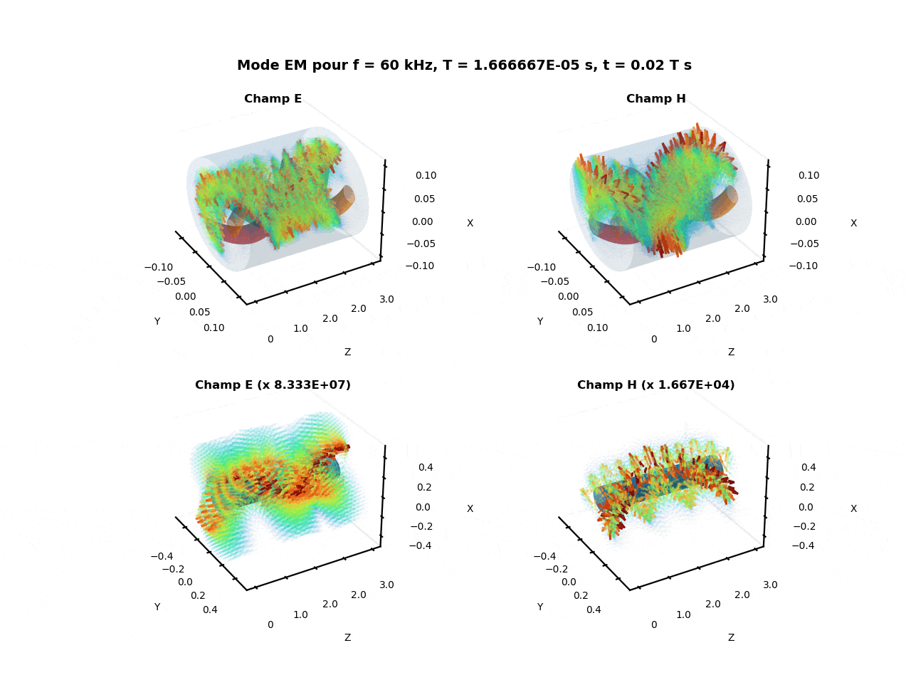
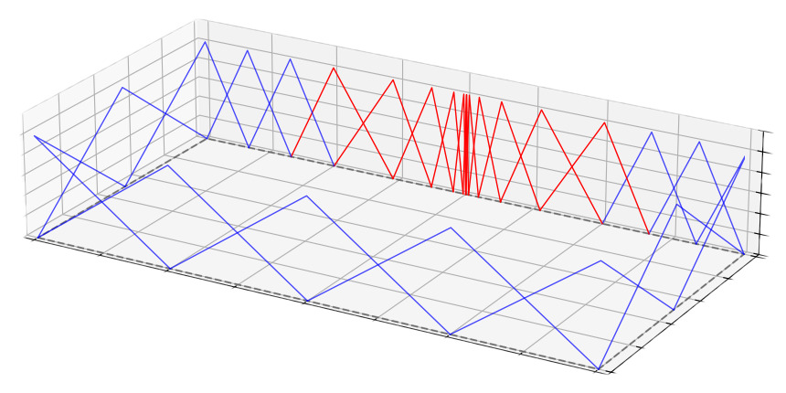
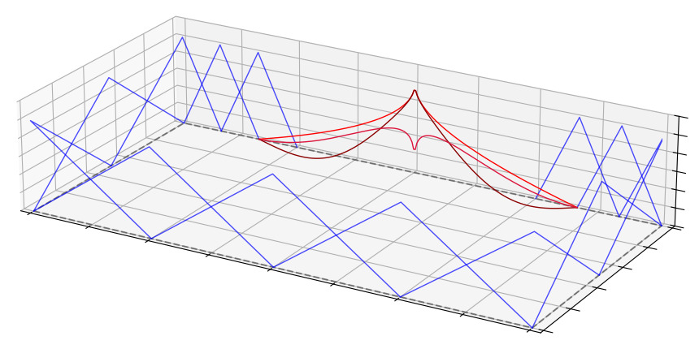

Helmholtz Eigenvalue Problems
In my work, I address the computational challenges of simulating guided waves in open waveguides. Accurate simulations require defining a finite computational area using Absorbing Boundary Conditions (ABCs). However, traditional ABCs create non-linear eigenvalue problems that are notoriously expensive to solve. These typically require complex iterative algorithms that struggle with speed and efficiency when identifying multiple propagating modes.
I have developed a new class of linearized ABCs that significantly reduce computational cost without sacrificing accuracy. By applying Newton’s algorithm to generate a rational approximation of the boundary operators, the system is transformed into a linear eigenvalue problem.



Maxwell Eigenvalue Problems
Open and straight electromagnetic waveguides
My research extends linearized boundary treatment to the full vectorial Maxwell system. This is crucial for modeling electromagnetic wave propagation in complex, multi-material environments like submarine cables.
In an infinite, homogeneous exterior domain, electromagnetic fields can be decomposed into longitudinal components. Since these components individually satisfy the Helmholtz equation, the BGT-type Absorbing Boundary Conditions can be applied to each one of these components. The physical coupling is maintained at the material interfaces within the computational domain.

Quasi-TEM mode inside (top) and outside (bottom) the cable. Here, the waveguide is bounded with BGT-like ABCs.
Twisted electromagnetic waveguides
While standard models assume longitudinal invariance, real-world industrial cables feature conductors and armoring that are physically twisted. My research addresses the significant mathematical and computational challenges introduced by this helical symmetry.
It has been shown that a twisted waveguide with homogeneous and isotropic components can be modelled equivalently by a straight waveguide with inhomogeneous and anisotropic components. My contribution is the reformulation of the modal problem of the twisted guide as an eigenvalue problem on the longitudinal fields in the helical coordinate system.

Electromagnetic mode inside (top) and outside (bottom) the cable. Here, the waveguide is bounded with a perfect electric conductor boundary.
Model Reduction
My research focuses on the numerical simulation of electromagnetic wave propagation within multi-scale structures, specifically addressing the computational challenges inherent in the Boundary Element Method (BEM). The presence of fine geometric details, such as narrow slots, induces field singularities that necessitate extreme mesh refinement. This constraint leads to the generation of massive, dense linear systems that are often computationally prohibitive in terms of both processing time and memory allocation.
To overcome these limitations, we propose a data-driven model order reduction technique designed to condense the physical influence of such singularities. By partitioning the BEM system into distinct interaction blocks and algebraic reducing techniques on the singular zone (SVD, least-square minimisation, ...), we represent the solution within a low-dimensional vector space. This space describes fonctions that preserve the physical impact of the slot while significantly reducing the global system's degrees of freedom.


Comparison between standard discretization using Lagrange elements (left) and the data-driven reduced basis on the slot area (right).
The robustness of this methodology has been demonstrated through 2D electromagnetic simulations. The model accurately predicts solutions for other unseen geometries. Building on these results, current experimentation is extending this framework to more complex and computationally demanding 3D problems, where the methodology continues to show highly promising performance for realistic industrial applications.